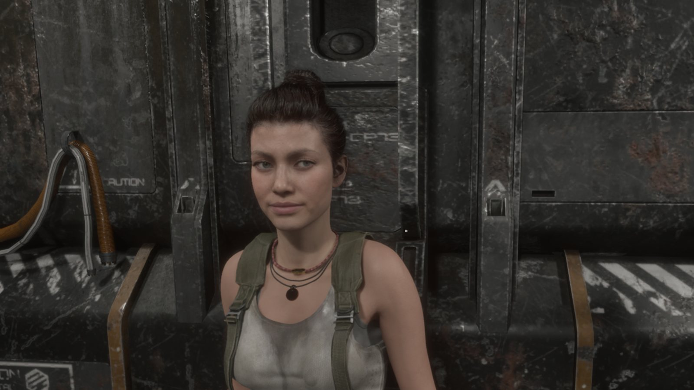
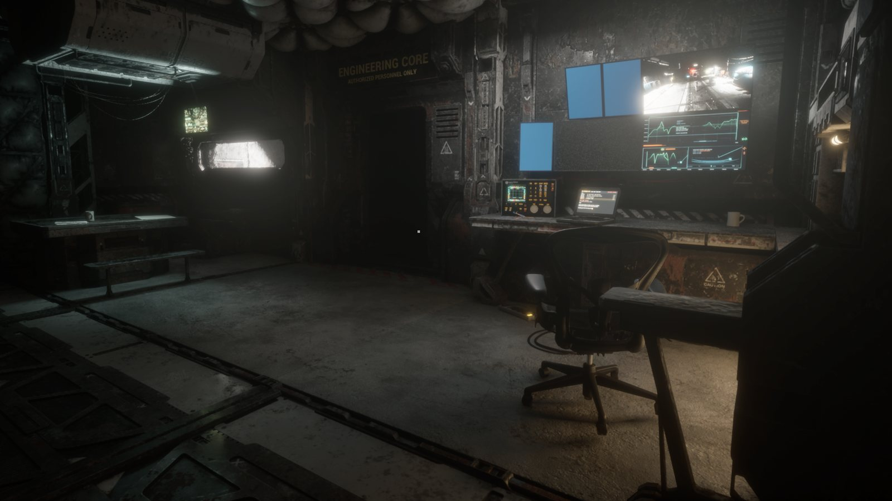
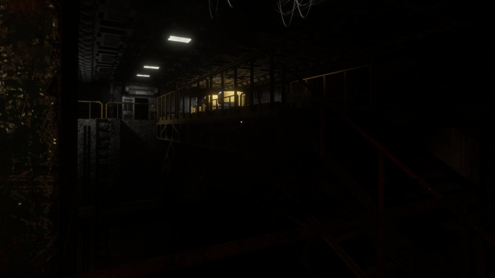
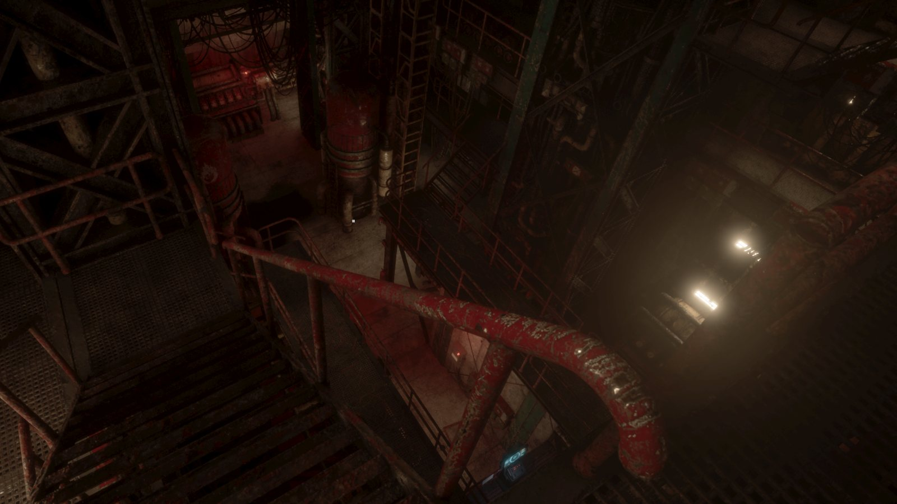

A grimdark sci-fi mystery survival game. In development for PC.
2126. The first generation of experimental warp travel.
The deep-belt mining vessel HCV Proserpina went dark midway through a classified drive trial. Corporate dispatched a security team of eight to board her and secure the site.
Three days later, they went silent too.
You are the follow-up: a lone incident assessor, sent to a cold hull four hundred million kilometers from anywhere — to determine why the drive failed, and to find the missing men.
The ship still has power. Someone aft is still drawing water.
START THERE.
No objective markers. No minimap. Eighteen crew lived aboard this ship, and everything they left behind is evidence. The ship will tell you what happened — if you learn to read her.
Every item aboard exists because someone, for some reason, left it there. Resources are scarce because the crew already used them. Every find is also a story.
No combat system. Whatever is aboard cannot be fought — it can be understood, avoided, outmaneuvered. Sometimes.




Development is long-haul and documented as it happens — build footage, systems work, and the occasional thing that should not have gotten into the walls. If you want to watch a haunted ship get built, the channel below is live.
Join the Discord